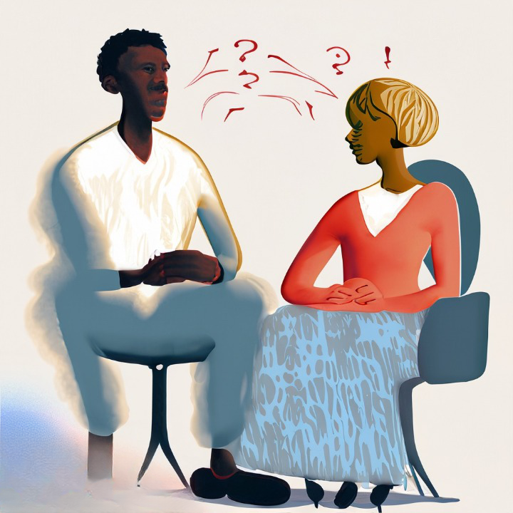

Resolução de Conflitos
A resolução de conflitos desempenha um papel fundamental na promoção de relações saudáveis e na manutenção da harmonia em todas as esferas da vida. Para resolver conflitos de maneira eficaz, é essencial adotar uma abordagem construtiva, que envolva escuta ativa e empática das partes envolvidas.
Isso permite que as pessoas expressem suas preocupações e perspectivas, promovendo um entendimento mútuo.
Além disso, a comunicação aberta e honesta desempenha um papel crucial na resolução de conflitos. As partes devem se esforçar para comunicar suas necessidades e desejos de forma clara e respeitosa, evitando acusações e culpas. Ao fazer isso, podemos trabalhar juntas na busca de soluções que atendam às necessidades de ambas as partes.
Por fim, é importante lembrar que a resolução de conflitos não se trata apenas de encontrar uma solução rápida, mas também de construir relacionamentos mais fortes e duradouros. As vezes, isso envolve compromissos e concessões mútuas. Na última análise, a resolução de conflitos bem-sucedida requer paciência, empatia e um desejo genuíno de encontrar soluções que beneficiem a todos os envolvidos.
